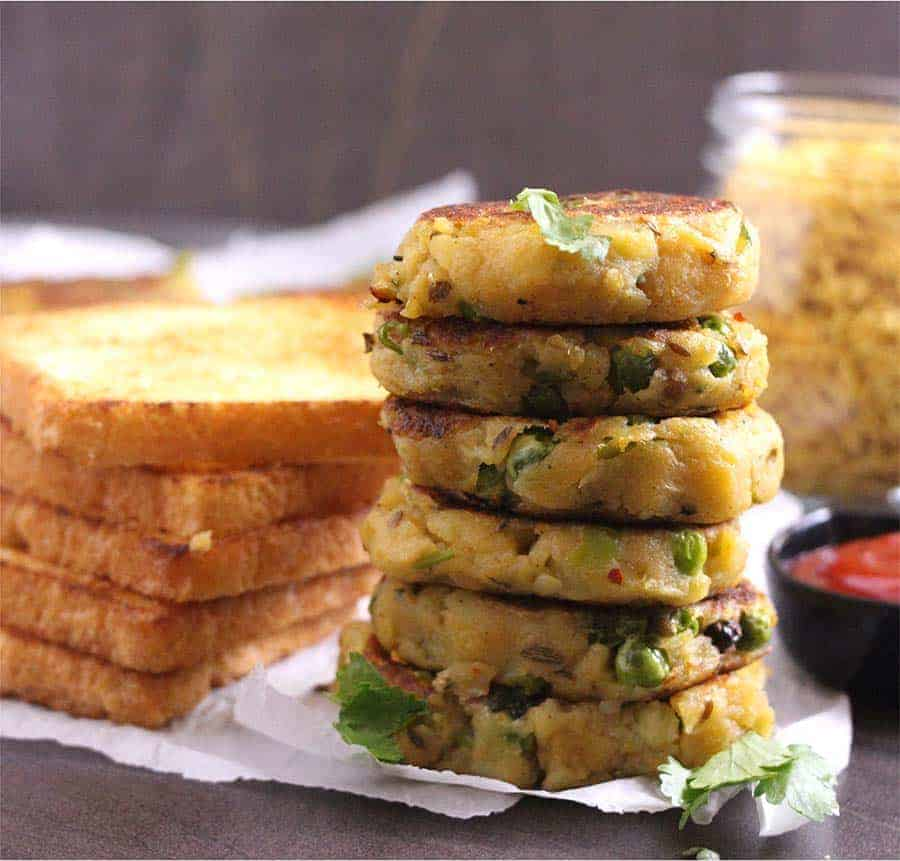

Aloo Tikki

Description
Aloo means potato, and Tikki means patties or cutlets or croquette.
Potato cutlets or patties made with mashed potatoes, green peas,
and some aromatic spices.
These are the Indian version of hash browns or mashed potato cakes.
Ingredients
- 4 medium Potatoes
- 2 tablespoon Oil
- 1 tablespoon Coriander seeds, crushed
- 1 teaspoon Cumin seeds
- 1 teaspoon Saunf or Fennel seeds
- Hing or Asafoetida (powder or whole), pinch
- 1 tablespoon Ginger, finely chopped
- 2 Green chilies, chopped
- ¾ cup Green peas (fresh or frozen)
- ½ teaspoon Garam masala or Tandoori masala or Curry powder
- ½ teaspoon Chaat masala or Amchur powder
- ½ teaspoon Red chile powder
- ½ to ¾ teaspoon Salt, adjust to taste
- 1 tablespoon Coriander leaves or Cilantro, chopped
Steps to make Aloo Tikki
- Boil potatoes in any way you prefer (stovetop, pressure cooker, instant pot, or microwave).
I generally place a trivet in a pressure cooker filled with enough water and then place the
bowl with potatoes and pressure cook for 3 to 4 whistles. After the pressure releases
naturally, peel the skin of the potatoes, roughly chop if needed and keep them aside.
- In a pan, add oil, coriander seeds, cumin seeds, fennel seeds, and hing, and saute until
this sizzles on medium flame.
- To this, add ginger and green chilies and saute for another 30 seconds to 1 minute.
- Now add potatoes, green peas, garam masala, chaat masala, red chile powder, salt, and
coriander leaves, and using a potato masher, nicely mash till everything is well
combined.
- Switch off the flame and let the mixture cool.
- Once the mixture cools down, take 2 to 3 tablespoon of the mixture and shape them into
tikkis, patties, or cutlets of desired shape and thickness.
- You can flatten it now or while cooking on the pan. Since I am pan frying, I did not
bother to fix any small cracked edges while forming patties. If you want patties to be
a perfect round, you are free to do it
- Heat a nonstick pan, tawa, or skillet on medium flame
- Place the tikkis, drizzle oil (for flavor and to obtain crispy patties upon frying),
and if you prefer an even more healthy version, you can even skip the oil.
- Once it is cooked and becomes golden on one side, flip and cook on the other side
till it is crisp and golden brown. You can press each tikki lightly with a spatula
if desired once you flip.
- Repeat the process for the remaining tikkis.
- Aloo Tikki or Potato Cutlet is ready. Serve with any chutney like mint chutney,
imli chutney or even tomato ketchup, and a hot cup of coffee or tea.